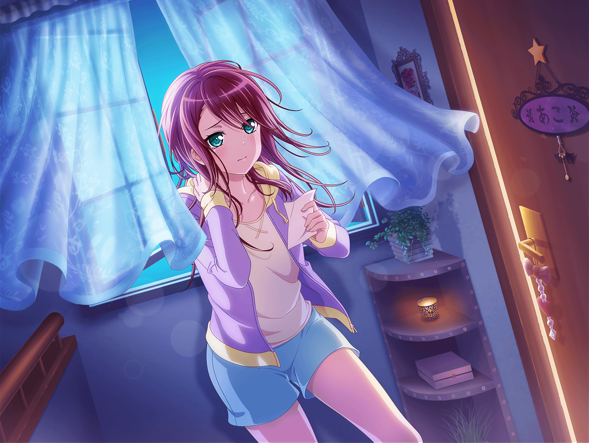

商店街
紗夜
あら、宇田川さん。
こんにちは
巴
あ、紗夜さんじゃないですか！
買い物ですか？
紗夜
ええ、親に頼まれまして、その帰りです。
宇田川さんは？
巴
アタシは今から出かけるところです。
今日はあこと約束してて
紗夜
そうですか。お二人は本当に仲がいいんですね
巴
まー、雨降って地固まるってやつですかね。
あの時は、本当にありがとうございました！
巴
この前のことがあってから、ずっと紗夜さんと
姉トークがしたいと思ってたんですよ！
今、時間あります？
紗夜
あ、姉トーク……？
巴
姉がいかに大変か、ざっくばらんに語り合うみたいな感じ？
紗夜
……はあ
巴
親によく言われませんでした？
『お姉ちゃんなんだから』って。
アタシ、すっごい言われたんですよ
巴
例えばゲームとかやってて、アタシが勝ち続けたりしますよね？
そしたらあこが泣き出したりして
巴
それを見て、親が言うんですよ、
『お姉ちゃんなんだから、ちょっと手加減してあげなさい』って
巴
小さいころはそういうの理解できなくって。
アタシだって勝ちたいし！ みたいな？
そういうの、なかったですか？
紗夜
そういうことは……
あまりなかったかもしれないわね
巴
……そっか。
紗夜さんと日菜先輩は双子ですもんね。
『お姉ちゃんなんだから』とはさすがに言われないですかね
紗夜
ええ。
親に言われた記憶はあまりありません。
だけど……
紗夜
私自身が思っていましたね。
『お姉ちゃんなんだから』と……
巴
自分で……ですか？
紗夜
お姉ちゃんなんだから、妹の面倒を見ないといけない……
お姉ちゃんなんだから、わがままを言ってはいけない……
お姉ちゃんなんだから……
紗夜
そんなことばかり考えていたような気がします
巴
そっか……
ひょっとしたらそれって……
誰かに言われるよりキツイかも、ですね
紗夜
今思えば、そんなに肩肘張ることもなかったのでしょうけど、
そういう性格なのだから、仕方ないわね
巴
はぁ～。その点、妹はいいですよね～。
そんな苦労も知らずに『おねーちゃん、遊ぼー！』ですから
巴
……ん？ こういうのなんて言うんでしたっけ？
なんかこういう時に使う言葉ありましたよね？ 確か……
姉の心……なんとか、みたいな……？
紗夜
それを言うなら『親の心 子知らず』……でしょうか？
巴
あ、姉じゃなくて親か。
けど『姉の心 妹知らず』いいと思いません？
姉の苦悩が詰まってる感じして！
紗夜
ふふ。
そうかもしれませんね
巴
あの、紗夜さん。
１つ聞いてもいいですか？
紗夜
何かしら？
巴
もしも次、生まれ変わったとしたら……
姉に生まれたいですか？ それとも妹？
紗夜
生まれ変わったら……？
そうね……
紗夜
私はやっぱり……姉かしら
巴
あははっ！
なんとなく紗夜さんなら、そう言うと思いましたよ！
巴
アタシもやっぱり、姉ですね
紗夜
ふふ。
あなたはとても姉が似合うわ
巴
その言葉、すごく嬉しいです！
ていうか、紗夜さんも姉以外考えられないですけどね
紗夜
ありがとうございます
巴・紗夜
……
あこ
あ～！
おねーちゃん、こんなところにいた～！
巴
あ、あこ！ どうした？ 待ち合わせには、まだ時間が……
巴
……ってあれ！？ もうこんな時間か！
あこ
そ〜だよ！ 遊ぶ時間、なくなっちゃうよ！
巴
ごめんごめん！
紗夜さんと、つい話し込んじゃっててな
あこ
へえー！
おねーちゃんが紗夜さんと一緒なんて、珍しいね？
巴
さっき偶然会ったんだよ。
それで、いろいろと話してたんだ
あこ
そうだったんだ！ なんだか最近おねーちゃんと
紗夜さんが仲良しでうれしいな〜♪
巴
紗夜さんとアタシにはちょっとした共通点があるからな〜
あこ
えっ、なんだろう？
んっとー……あっ！ 二人ともカッコイイ！
紗夜
カッコイイって……
巴
あははっ。ハズレ！
あこ
えー！？ だって、二人ともカッコイイもん！ 違うの？
巴
まあけど、そう思ってくれてるならそれでいいか。
それじゃ、紗夜さん。アタシ達はこれで。
また姉トークしましょうね！
紗夜
ええ
あこ
あねとーく……？ あっ！！ そっか！！！
あこ
二人ともおねーちゃんだ！
巴
あははっ。あこ、正解っ！
やっと気づいたのか？
あこ
えへへー。二人ともカッコイイおねーちゃん、だねっ！